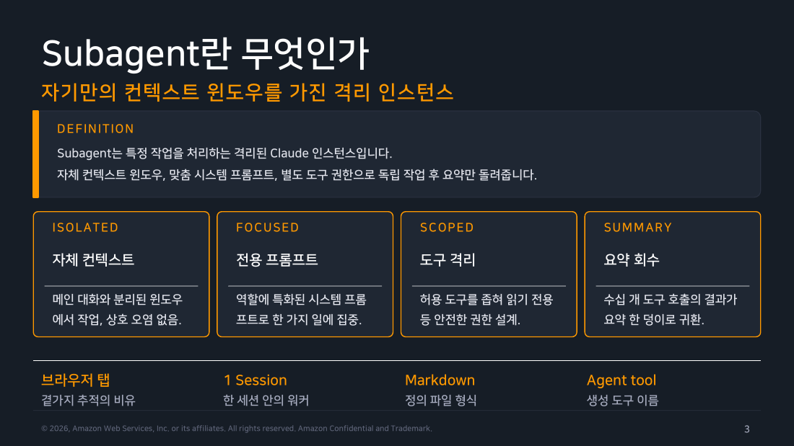
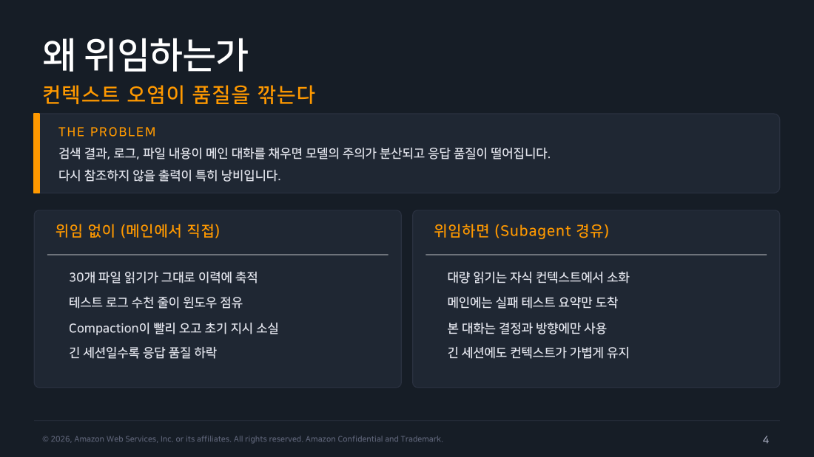
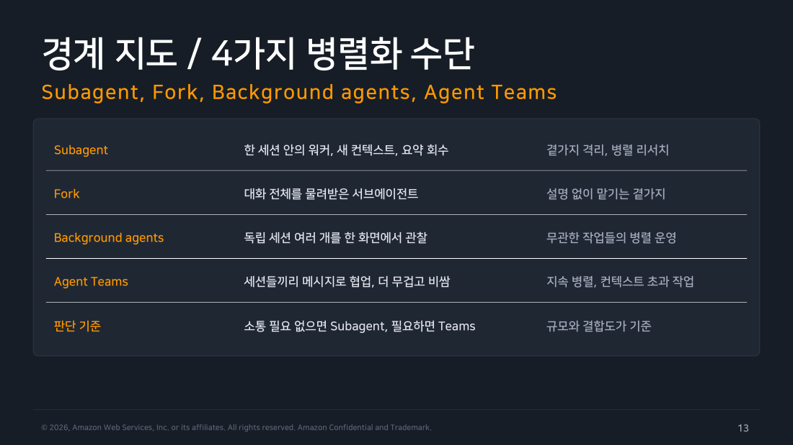

Part 1 — Subagents 개념과 원리¶
한 줄 요약¶
Subagent는 메인 Claude가 특정 작업을 위임하는 격리된 인스턴스입니다. 자체 컨텍스트 윈도우에서 일하고 요약만 돌려주어, 메인 대화가 파일 덤프로 오염되지 않게 막습니다.
왜 알아야 하나¶
세션이 길어질수록 컨텍스트 윈도우가 차오릅니다. 30개 파일 내용, 수천 줄짜리 테스트 로그, 반복되는 검색 결과가 쌓이면 모델의 주의가 분산되고 Compaction이 빨리 옵니다(1주차 Part 2 참고). 압축으로 자리는 생기지만 요약 과정에서 세션 첫머리의 지시가 뭉개지고, 긴 세션일수록 응답 품질이 눈에 띄게 떨어집니다.
Subagent는 이 문제를 구조적으로 해결합니다. 무거운 분석을 자식 컨텍스트에서 소화하고, 메인에는 실패 테스트 요약이나 리뷰 결과처럼 꼭 필요한 덩이만 돌려보냅니다. 메인 대화는 결정과 방향에만 집중할 수 있습니다.
1. Subagent란 무엇인가¶
Subagent는 특정 작업을 처리하는 격리된 Claude 인스턴스입니다. 다음 네 가지 특성이 일반 도구 호출과 구분합니다.
-
격리된 컨텍스트(ISOLATED): 메인 대화와 분리된 자체 컨텍스트 윈도우에서 작업합니다. 메인과 자식 사이에 상호 오염이 없습니다.
-
전용 시스템 프롬프트(FOCUSED): 역할에 특화된 시스템 프롬프트를 받습니다. 코드 리뷰어는 리뷰에만, 보안 스캐너는 취약점 분석에만 집중합니다.
-
도구 격리(SCOPED): 허용 도구를 좁혀 읽기 전용 등 안전한 권한 설계가 가능합니다. 메인이 가진 전체 도구를 자동 상속하지 않습니다.
-
요약 회수(SUMMARY): 수십 개 도구 호출의 결과가 요약 한 덩이로 귀환합니다. 중간 과정은 자식 컨텍스트에 남습니다.
교재는 브라우저 탭에 비유합니다. 탭을 열어 곁가지 작업을 하고, 결과만 메인 탭에 붙여넣는 흐름입니다.
이 문서에서는 여기에 비유를 하나 더 씁니다 — Subagent를 "오늘 처음 출근한 신입 인턴"이라고 생각하면 이후 내용이 더 잘 들어옵니다. 인턴에게 일을 맡길 때 뭘 알려주고, 뭘 안 알려주는지, 언제 옆에서 기다리고 언제 다른 일을 하는지를 떠올리면서 읽으면 이해가 빠릅니다. 이 비유는 §3·§6·§8에서 다시 등장합니다.

▲ 교재 슬라이드 3 — Subagent란 무엇인가
2. 왜 위임하는가 — 컨텍스트 오염¶
파일 30개를 메인에서 직접 읽으면 그 내용 전체가 대화 이력에 축적됩니다. 테스트 로그 수천 줄이 윈도우를 점유하고, Compaction이 예정보다 빨리 도착해 초기 지시가 소실됩니다. 긴 세션일수록 이 누적이 응답 품질을 깎습니다.
Subagent로 위임하면 대량 읽기는 자식 컨텍스트에서 소화됩니다. 메인에는 실패 테스트 요약만 도착하고, 본 대화는 결정과 방향에만 사용됩니다. 긴 세션에도 컨텍스트가 가볍게 유지됩니다.
현장 메모
Compaction 지점을 늦추는 가장 실용적인 수단이 Subagent 위임입니다. 로그, 검색 결과, 파일 덤프처럼 "보고 나면 다시 참조하지 않을 출력"을 자식에게 맡기면 메인 세션이 버티는 시간이 눈에 띄게 늘어납니다.

▲ 교재 슬라이드 4 — 왜 위임하는가
시간축으로 보면 더 분명합니다. 왼쪽은 메인이 직접 파일을 읽어 나갈 때 컨텍스트 게이지가 차오르는 모습이고, 오른쪽은 같은 일을 서브에이전트에 넘겼을 때 자식 쪽이 차오르고 메인에는 얇은 요약 한 조각만 돌아오는 모습입니다.

3. Subagent 초기 컨텍스트 — 시작 시 무엇이 로드되나¶
새로 스폰된(spawn — 새 인스턴스로 만들어 띄운) Subagent는 §1의 신입 인턴 비유가 딱 들어맞는 지점입니다. 업무 지시서와 회사 규정집은 받지만, 어제 팀장님(메인 Claude)이 누구와 무슨 얘기를 나눴는지는 전혀 모릅니다. 한 문장으로 요약하면 — "무엇을 하라"는 지시와 "어떤 프로젝트인가"라는 배경만 받고, 메인이 지금까지 나눈 대화 자체는 받지 않습니다. 부모가 쌓아온 긴 대화 이력, 부모가 연 파일들, 부모의 도중 판단은 전달되지 않습니다. 구체적으로는 아래 항목만 받아 출발합니다.
-
System Prompt: 에이전트 자신의 프롬프트와 작업 디렉토리 등 환경 정보. Claude Code 전체 프롬프트는 포함되지 않습니다.
-
Task Message: 메인 Claude가 작성한 위임 지시문. 대화 이력은 오지 않습니다. 자식은 메인이 무슨 이야기를 했는지 모릅니다.
-
CLAUDE.md + Memory: 메인이 로드한 메모리 계층 전체. 단 Explore와 Plan은 생략합니다.
-
Git Status: 부모 세션 시작 시점의 스냅샷. 역시 Explore와 Plan은 생략.
-
Preloaded Skills: 정의 파일의
skills필드에 지정한 스킬의 본문 전체.
Note
여기에 조건부로 하나 더 붙습니다 — 형제 명단: main과 세션의 다른 명명된 에이전트를 나열한 알림입니다(v2.1.206+). 그 에이전트의 도구에 SendMessage가 있고 이름이 붙은 다른 에이전트가 하나 이상 있을 때만 나타납니다. 처음 에이전트를 설계할 땐 신경 쓰지 않아도 되고, Part 3에서 여러 에이전트를 조합할 때 다시 참고하면 됩니다.
4. 위임의 5대 가치¶
공식 문서가 정리한 Subagent의 효용 다섯 가집니다.
-
컨텍스트 보존(Preserve Context): 탐색과 구현 출력을 메인 대화 밖에 격리합니다.
-
제약 강제(Enforce Constraints): 도구 제한으로 읽기 전용 등 안전선을 강제할 수 있습니다.
-
설정 재사용(Reuse Configs): 사용자 레벨 정의 파일로 전 프로젝트에서 동일한 에이전트를 재활용합니다.
-
전문화(Specialize): 도메인 특화 시스템 프롬프트로 범용 에이전트보다 성공률이 올라갑니다.
-
비용 통제(Control Costs):
model: haiku처럼 경량 모델로 라우팅해 비용을 절감합니다. 팀이.claude/agents/정의를 버전 관리에 올리면 학습과 설정을 함께 공유합니다.
5. Built-in 에이전트¶
Claude Code에는 사용자 정의 없이 내장된 에이전트들이 있습니다.
-
Explore: 읽기 전용 탐색 전문 에이전트. 코드베이스 검색과 분석에 최적화되어 있고, Claude가 수정 없이 코드를 이해해야 할 때 자동 위임합니다. 호출 깊이를 quick / medium / very thorough로 지정할 수 있습니다. v2.1.198부터 메인 모델을 상속하지만, Claude API 환경에서는 Opus 상한이 적용됩니다. One-shot 특성이라 resume(종료된 에이전트를 이어서 깨우는 기능 — Part 3에서 다룹니다)이 불가능합니다.
-
Plan: Plan 모드의 조사 담당. 읽기 전용이고 탐색 출력을 별도 창에 격리합니다. 역시 One-shot.
-
general-purpose: 전체 도구와 모델 상속, 탐색과 수정을 모두 할 수 있는 범용 에이전트. 복잡한 다단계 작업에 사용됩니다.
-
statusline-setup, claude-code-guide: 각각
/statusline실행 시, Claude Code 기능 질문 시 자동으로 발동하는 운영 보조 에이전트입니다.
내장 에이전트를 비활성화하려면 permissions.deny에 Agent(Explore) 등을 등록하거나 환경변수 CLAUDE_CODE_DISABLE_EXPLORE_PLAN_AGENTS=1을 설정합니다.
Warning
교재 슬라이드 9는 이 변수를 DISABLE_EXPLORE_PLAN_AGENTS로, 슬라이드 10은 백그라운드 비활성화 변수를 DISABLE_BACKGROUND_TASKS로 적었습니다. 실제 이름은 둘 다 CLAUDE_CODE_ 접두어가 붙습니다. 슬라이드 폭에 맞추느라 잘린 것으로 보이는데, 그대로 옮겨 쓰면 아무 일도 일어나지 않습니다.
현장 메모
Bedrock 환경에서는 Explore가 메인 모델을 직접 상속합니다. Claude API와 달리 Opus 상한이 없어서, 메인 모델이 이미 Opus라면 탐색 비용이 예상보다 크게 나올 수 있습니다. 안전망은 Explore라는 이름의 사용자 또는 프로젝트 서브에이전트를 model: haiku로 정의해 내장 정의를 덮어쓰는 것입니다. 공식 문서가 안내하는 방법이 이쪽입니다. CLAUDE_CODE_SUBAGENT_MODEL 환경변수는 Explore만이 아니라 모든 서브에이전트에 걸리므로 탐색 비용만 낮추려는 의도와는 맞지 않습니다.
6. 실행 모델 — Foreground vs Background¶
인턴에게 일을 시켰을 때와 마찬가지로 두 가지 모드가 있습니다. v2.1.198부터 서브에이전트는 기본적으로 백그라운드에서 실행됩니다.
-
Foreground: 인턴을 시켜놓고 옆에서 팔짱 끼고 기다리는 것과 같습니다. 완료까지 메인 세션이 차단됩니다. 다음 판단에 결과가 즉시 필요할 때 사용합니다.
-
Background: 인턴을 시켜놓고 나는 다른 일을 계속하다가, 끝나면 알림을 받는 방식입니다. 동시 진행하고 완료 시 결과가 메시지로 도착합니다. 현재 기본값. 백그라운드 에이전트의 권한 프롬프트는 메인에 떠오르며 어느 에이전트의 요청인지 표기됩니다.
키보드 조작: Ctrl+B로 실행 중 작업을 백그라운드로 전환할 수 있습니다. 개별 승인을 거부하려면 Esc를 사용합니다. 백그라운드 실행 자체를 끄려면 CLAUDE_CODE_DISABLE_BACKGROUND_TASKS=1 환경변수를 설정합니다.
여기서 "기본값이 백그라운드"라는 말을 오해하면 안 됩니다. 공식 문서의 표현은 "Claude는 결과가 필요한 경우 subagent를 foreground에서 실행합니다. 기본값은 subagent가 실행되는 위치를 변경하며, 수행할 수 있는 작업은 변경하지 않습니다"입니다.
실제로 이번 주에 돌린 헤드리스(-p) 실행에서는 위임이 전부 포그라운드로 관찰됐습니다. 병렬로 세 에이전트를 띄운 경우에도 -p가 세 결과를 모두 기다린 뒤에야 최종 응답을 반환했습니다. -p는 한 번의 요청에 대한 최종 답을 만드는 게 목적이라 결과가 즉시 필요한 상황이 대부분이기 때문으로 보입니다.
다만 -p에서 백그라운드 스폰이 불가능한 것은 아닙니다. 공식 문서는 claude -p가 백그라운드 서브에이전트의 완료를 기다린다고 설명하고, 그 대기에 상한(기본 10분, CLAUDE_CODE_PRINT_BG_WAIT_CEILING_MS)까지 두고 있습니다. 기다릴 대상이 있다는 뜻이니 구조적으로 막힌 게 아니라 이번 실행들에서 그렇게 선택되지 않은 것입니다. 어쨌든 터미널에서 대화형으로 볼 때와 CI에서 -p로 돌릴 때 관찰되는 그림이 다릅니다. 원본 로그는 Part 7에 있습니다.
7. 상태 모델 — 종료 후에도 살아있다¶
각 Subagent 호출은 새 인스턴스로 시작하지만, 완료된 에이전트의 대화 기록은 파일로 남습니다. 이 ID를 지목해 이어서 재개할 수 있습니다.
세션 폴더의 subagents/ 디렉토리 아래 agent-{id} JSONL 파일이 생성되며, cleanupPeriodDays 설정에 따라 정리됩니다(기본값 30일). Explore와 Plan만 예외로 One-shot 특성이라 재개가 불가능합니다.
8. 4가지 병렬화 수단의 경계¶
비슷해 보이지만 서로 다른 네 가지 수단이 있습니다. 전부 "인턴을 어떻게 쓰느냐"의 변형이라고 생각하면 구분이 쉬워집니다.
-
Subagent: 인턴에게 짧은 지시서를 써서 곁가지 일 하나를 맡기는 것. 한 세션 안의 워커로, 새 컨텍스트로 시작하고 요약만 회수합니다. 곁가지 격리, 병렬 리서치에 적합합니다.
-
Fork(/subtask): 지금까지의 회의록을 통째로 넘겨서 이어서 하게 하는 것. 메인의 지금까지 쌓인 대화 이력을 그대로 가지고 출발합니다. 설명 없이 맡기는 곁가지에 적합합니다. Fork는 메인의 프롬프트 캐시를 공유하므로 신규 스폰보다 저렴합니다.
Warning
인세션 fork 서브에이전트를 부르는 명령은 v2.1.212부터 /subtask 입니다. /fork는 그 버전부터 의미가 바뀌어 세션 전체를 별도 백그라운드 세션으로 복사하는 다른 기능이 됐습니다(v2.1.161~211에서는 /fork가 지금의 /subtask 역할이었습니다). 실습 버전 v2.1.226 기준으로는 이 절의 "Fork"는 /subtask를 가리킵니다.
-
Background agents: 서로 무관한 알바생 여러 명을 대시보드 하나로 지켜보는 것. 독립 세션 여러 개를 한 화면에서 관찰하는 방식으로, 무관한 작업들의 병렬 운영에 적합합니다.
-
Agent Teams: 인턴들끼리 서로 메시지를 주고받으며 협업하게 하는 것. 더 무겁고 비싸지만 지속적 병렬 처리와 컨텍스트 초과 작업에 사용합니다. 다만 실험 기능이라 기본이 비활성이고
CLAUDE_CODE_EXPERIMENTAL_AGENT_TEAMS환경변수로 켜야 씁니다. 나머지 셋과 달리 "일단 켜는 것"부터가 선택입니다.
판단 기준은 규모와 결합도입니다. 소통이 필요 없으면 Subagent, 필요하면 Teams, 이미 쌓인 맥락을 공유해야 하면 Fork다.
flowchart TD
A[병렬화가 필요하다] --> B{기존 대화 맥락을\n공유해야 하나?}
B -- 예 --> C["/subtask"]
B -- 아니오 --> D{세션 간 소통이\n필요하나?}
D -- 예 --> E[Agent Teams]
D -- 아니오 --> F{독립적인 여러 세션을\n한 화면에서 관찰?}
F -- 예 --> G[Background agents]
F -- 아니오 --> H[Subagent]
▲ 교재 슬라이드 13 — 경계 지도 / 4가지 병렬화 수단
9. 모델 해석 우선순위¶
Subagent가 어떤 모델로 실행되는지는 4단계 우선순위로 결정됩니다.
첫째, 환경변수 CLAUDE_CODE_SUBAGENT_MODEL이 있으면 최우선으로 적용됩니다. 둘째, 메인 Claude가 Agent 도구 호출 시 함께 넘기는 model 값입니다. 셋째, 정의 파일의 model 필드입니다. 넷째, 위가 모두 없으면 메인 대화의 모델을 그대로 상속합니다.
주의
model: inherit은 명시적으로 상속을 선언하는 값입니다. 아무것도 쓰지 않아도 상속이 기본이지만, 팀 정의 파일에서 "의도적으로 상속을 선택했습니다"는 것을 문서화할 때 유용합니다.
10. 비용과 레이턴시 — 위임에도 가격표가 있다¶
Subagent는 새 컨텍스트에서 출발하므로 상황 파악 시간이 듭니다. 빠른 단발 작업에는 오버헤드가 클 수 있습니다. 다수 에이전트의 상세 결과가 메인을 다시 채울 수도 있으므로, 요약 형식을 명시적으로 지시하는 것이 중요합니다.
탐색성 워커에는 model: haiku를 지정해 비용을 절감할 수 있습니다. Fork는 메인의 프롬프트 캐시를 공유하므로, 같은 맥락이 필요한 경우에는 신규 Subagent보다 저렴합니다.
11. Subagent 안티 패턴¶
위임하지 말아야 할 순간들이 있습니다.
잦은 왕복이 필요한 대화형 작업은 메인에서 직접 처리하는 것이 낫습니다. 계획, 구현, 테스트가 맥락을 공유하는 연속 작업을 억지로 분리하면 오히려 오버헤드가 생깁니다. 한 줄 수정 같은 초단발 작업은 메인에서 직접 처리하는 편이 빠릅니다. 대화 맥락에 대한 곁 질문이라면 /btw가 적합합니다 — 전체 컨텍스트를 보지만 도구가 없어 수정은 못 하고, 답변이 대화 이력에 남지 않습니다.
전 단계 결과에 의존하는 조사들을 병렬화하면 먼저 끝난 에이전트의 결과를 다음 에이전트가 모르는 상황이 생깁니다. 만능 에이전트 하나로 모든 역할을 해결하려 하면 description 정확도가 떨어지고 자동 위임이 오발합니다. 역할별 단일 책임 에이전트로 분리하는 것이 원칙입니다.
직접 해보기¶
실행 환경: macOS 26.5.1 / Claude Code v2.1.x
Claude 세션 내에서:
예상 출력:
사용 가능한 서브에이전트:
- Explore : 읽기 전용 코드 탐색 (내장)
- Plan : Plan 모드 조사 담당 (내장)
- general-purpose : 범용 에이전트 (내장)
메모
핸즈온랩 Task 1에서 code-reviewer를 정의하기 전에는 내장 에이전트만 목록에 나타납니다. @ 를 입력해 typeahead로 확인하는 방법이 더 빠릅니다.
흔한 오해 바로잡기¶
-
"Subagent는 메인 세션의 도구를 모두 쓸 수 있습니다" — 아닙니다.
tools필드로 허용 목록을 명시하지 않으면 메인의 전체 도구를 상속하는 것은 맞지만, 이는 의도하지 않은 권한 부여입니다. 역할에 필요한 도구만 명시적으로 지정하는 것이 안전의 기본입니다. -
"/agents 명령으로 에이전트를 관리합니다" — v2.1.198부터
/agents위저드는 제거됐습니다. 에이전트 관리는 파일 기반입니다. 정의 파일을 직접 작성하거나 Claude에게 만들어달라고 하면 됩니다. -
"정의 파일을 수정하면 바로 적용됩니다" — 감시 주기가 있어서 몇 초의 지연이 있습니다. 세션 시작 시 없던
agents/폴더를 새로 만든 경우에는 세션 재시작이 필요합니다.
정리¶
Subagent는 메인 컨텍스트를 지키는 격리 워커입니다. 자체 컨텍스트에서 일하고 요약만 돌려주기 때문에, 긴 세션에도 메인 대화의 품질을 유지할 수 있습니다. v2.1.198부터 기본이 백그라운드 실행으로 바뀌었고, 이제 Fork / Background agents / Agent Teams와 명확하게 역할이 구분됩니다. 다음 파트에서는 이 격리 워커를 직접 정의하는 방법을 다룹니다.
출처¶
- Claude Code Deep Dive Workshop — Chapter 2 / Agents (Subagents) / Part 1: 개념과 원리 (17p)
- 공식 문서: Sub-agents · Agent Teams · Model configuration · 환경 변수